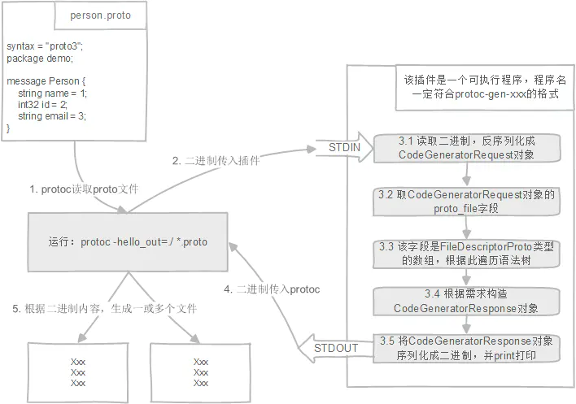

protobuf扩展插件编写
Protocol Buffers（简称：ProtoBuf）是一种序列化数据结构的协议。对于透过管道(pipeline)或存储资料进行通信的程序开发上是很有用的。这个方法包含一个接口描述语言，描述一些数据结构，并提供程序工具根据这些描述产生代码，用于将这些数据结构产生或解析资料流。——维基百科
protoc生成工具：here
ProtoBuf支持很多语言，生成每种语言可使用的协议代码则是另一个类似于插件一样的工具，Go则类似于有protoc-gen-go。
之前也对Go-Micro的gen-micro比较感兴趣，也正好在找寻一种方便生成代码的办法。
插件的运行流程
在执行protoc编译的时候，命令行是这样写的：protoc --proto_path=. --go_out==paths=source_relative:. hello.proto，protoc会去读取hello.proto，然后将其编译成.go的文件（要求PATH下有protoc-gen-go工具）。
如果我们命令行这样写：protoc --xxx_out=./ *.proto，由于不认识xxx，于是protoc会在PATH路径下寻找一个叫做protoc-gen-xxx的可执行文件。而protoc-gen-xxx就是我们要实现的插件。
插件的运行流程如图：
- 我们只需要关注步骤3.1~3.5，其余步骤是谷歌protoc完成
- CodeGeneratorRequest和CodeGeneratorResponse对象定义在plugin.proto里面
- FileDescriptor代表了一个proto文件，定义在descriptor.proto里面

Error插件
在之前我有关于Error的文章中，就有所提及error有着常见的几种表现形式，特别是关于在GRPC中怎么处理error的实践。这种处理我觉得应该是Go-Micro中先使用的，然后由Kratos中继续演进，我是非常喜欢Kratos对error的进一步简化的，这其中就包括我所看中的Error protoc插件。
1 | main() |
此处还借用了google带的两个扩展参数：google.protobuf.EnumOptions和google.protobuf.EnumValueOptions。
EnumOptions前者是定义了一个可选字段——default_code；
EnumValueOptions则是扩展了error的注释；
1 | defaultCode := proto.GetExtension(enum.Desc.Options(), errors.E_DefaultCode) |
查看proto文件，如下，error.proto是需要的，且只能这么生成，需要和工具的字段对应上，否则，error_reason.proto将用不了default_code和code两个扩展功能。
error.proto
1 | syntax = "proto3"; |
error_reason.proto
1 | syntax = "proto3"; |
生成的代码：
1 | func IsContentMissing(err error) bool { |
可以看到最终的结果是这样的不透明错误处理函数，也就是之前说的Opaque Error。别人引用的时候就可以直接调用这些处理函数了，很方便。
本文标题：protobuf扩展插件编写
文章作者：小师
发布时间：2021-06-22
最后更新：2022-05-04
原始链接：chunlife.top/2021/06/22/protobuf扩展插件编写/
版权声明：本站所有文章均采用知识共享署名4.0国际许可协议进行许可